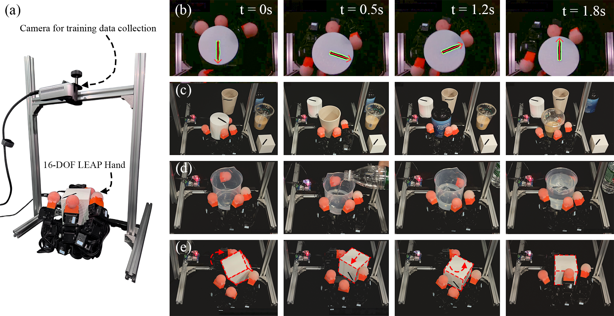
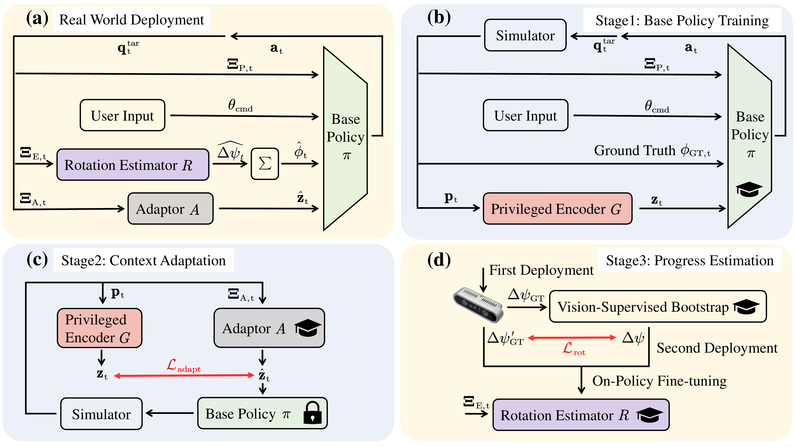
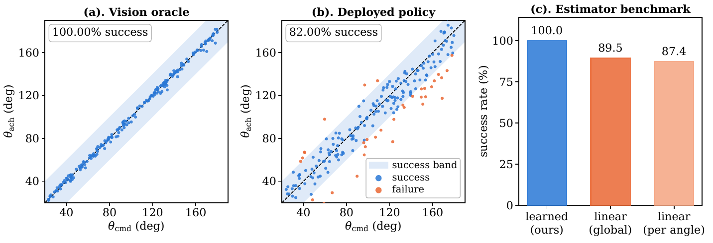
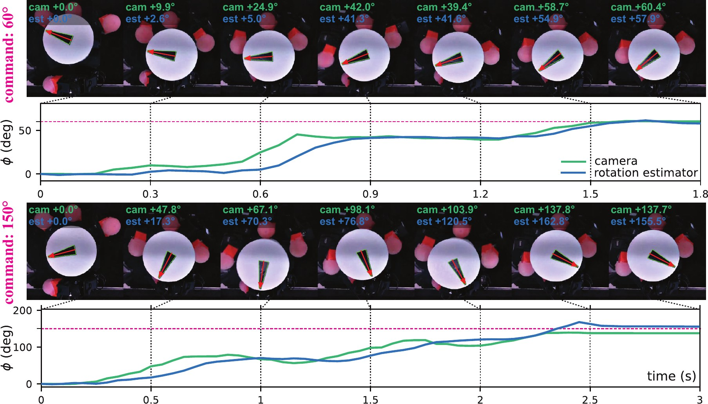
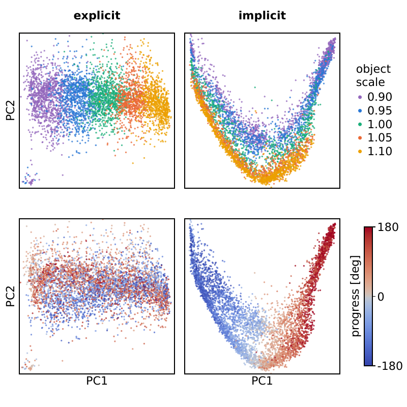
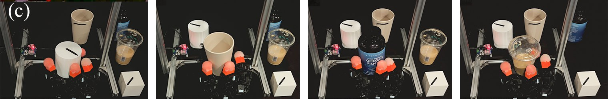
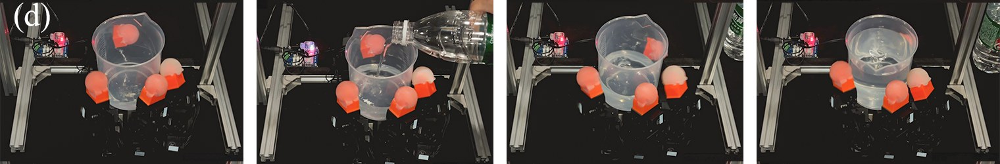
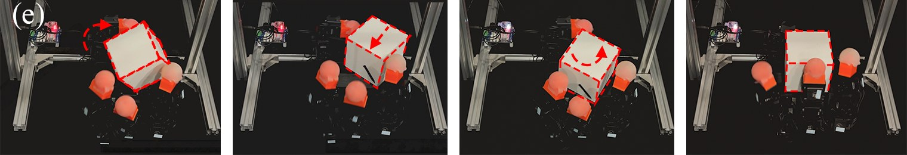

DexOrient: Proprioceptive In-Hand Object Reorientation
with Precise Command Following
Abstract
Proprioception alone has been shown to sustain in-hand rotation across diverse objects and to reach a small set of discrete goal orientations. Precisely tracking and stopping at an arbitrary, continuous-valued commanded angle without any external observation of the object has remained open.
DexOrient is a proprioception-only framework for goal-conditioned in-hand yaw reorientation. Unlike continuous rotation, which depends mainly on object and contact properties, reaching an arbitrary target additionally requires tracking rotation progress from the moment the command is issued, a relative quantity that stays well-defined even when the object's absolute pose is ambiguous. DexOrient estimates the two signals separately: object context is distilled from privileged simulation state by an RMA-style adaptor, while rotation progress is tracked explicitly by a GRU estimator that predicts per-step yaw increments and integrates them from command onset. Because sim-to-real error accumulates over a command, the estimator is further refined on real-robot trajectories.
Deployed on an open-source 16-DoF LEAP Hand, DexOrient achieves 82.0% success over 200 continuous-valued commands from 22.5° to 180° (fitted slope 0.909), against 100% when progress is supplied by a vision oracle. Explicitly separating progress from object context roughly doubles real-world success over an implicit encoding, and a latent analysis shows why: an implicit latent spends its capacity on progress at the expense of object context. The system also handles everyday objects and stays stable under shifted mass and external disturbances.

How DexOrient Works

Base policy with privileged context
A goal-conditioned actor is trained with PPO in simulation on cylinders. Its observation is a short window of joint positions and joint targets, the commanded angle θcmd, the rotation progress φt, and a context latent zt produced by a privileged encoder from object position, scale, mass, friction and centre-of-mass offset. Progress is deliberately kept out of the privileged vector, so the latent describes the object, not the motion. Domain randomization covers scale, mass, centre of mass, friction, and joint stiffness and damping.
Object-property adaptor (RMA)
Object properties shape the contact dynamics but are not measurable on hardware. A stateless temporal-convolutional adaptor infers the context latent ẑt from a 30-frame proprioceptive history, trained by supervised regression to the teacher latent while the actor and encoder stay frozen. Rollouts use the student's own actions so training sees the deployable state distribution.
Rotation-progress estimator
A two-layer GRU with a fixed 8-frame window predicts the signed yaw increment of the last control step from the same proprioceptive frame; an external integrator sums the increments from command onset to give φ̂t, which the actor uses to decelerate and stop. The estimator is pretrained with overhead-camera supervision and then fine-tuned on trajectories where its own estimate drives the frozen policy, correcting the drift that sim-to-real error would otherwise accumulate.
Evaluation protocol
- Commands are sampled uniformly from [22.5°, 180°]. Simulation uses 8,192 commands with a 200-step budget; hardware uses 200 commands with a fixed control-step budget.
- Success: the settled achieved angle θach stays within 20° of the command for at least 10 consecutive control steps. We also report on-target rates at 10° and 15°, the median terminal error, and the slope and R² of a least-squares fit of θach on θcmd.
- Ground truth on hardware comes from an overhead RGB camera tracking a dark arrow on the object's top face. It is used only for estimator training and evaluation, never by the deployed policy.
Command Tracking on the Real Hand
200 commands, 22.5°–180°
vision oracle
θach vs. θcmd (R² 0.880)


Explicit vs. Implicit Encoding of Rotation Progress
The deployable actor needs two partially observed quantities: what object it is holding (context) and how far it has already turned since the command (progress). Where should progress live? We compare our explicit design, in which a dedicated estimator predicts progress and feeds it straight to the actor, against an implicit design that appends progress to the privileged state, so a single 8-dimensional latent must carry object context and progress together and the adaptor must recover both from proprioceptive history.
Explicit ours
position, scale, mass, friction, CoM→encoder / adaptor→context latent zt
The latent is reserved for object context. Progress, a command-reset integral, is tracked by a module built for integration.
Implicit baseline
One latent must hold a context quantity that every contact re-evidences and a state quantity that no bounded window can observe.
Command tracking under the two encodings
| Rollout | Progress encoding | On target (%) | Median |θach − θcmd| (°) | Slope | R² | ||
|---|---|---|---|---|---|---|---|
| ±10° | ±15° | ±20° | |||||
| Teacher (sim) | Implicit | 99.84 | 99.95 | 99.95 | 1.12 | 1.010 | 0.998 |
| Explicit | 99.48 | 99.51 | 99.52 | 0.68 | 1.000 | 1.000 | |
| Student (sim) | Implicit | 45.54 | 64.37 | 78.17 | 11.05 | 1.059 | 0.918 |
| Explicit | 73.62 | 87.71 | 93.20 | 5.44 | 1.005 | 0.961 | |
| Real | Implicit | 27.78 | 36.53 | 44.19 | 23.62 | 0.788 | 0.283 |
| Explicit | 58.00 | 72.00 | 81.00 | 8.27 | 0.922 | 0.894 | |
| Explicit (vision oracle) | 99.86 | 100.00 | 100.00 | 1.14 | 0.990 | 0.998 | |
On target is the fraction of trials with |θach − θcmd| within the band; slope and R² come from a least-squares fit of θach on θcmd. The two encodings are equivalent for the privileged teacher; the gap opens only once the latent has to be inferred from proprioception, and widens on hardware.
What the adapted latent encodes

Two leading principal components of the adapted latent ẑt, pooled over on-policy rollouts, coloured by object scale (top) and by ground-truth progress (bottom).
Under the implicit encoding the latent is visibly ordered by progress and object scale is smeared along the same curve. Under the explicit encoding the latent ignores progress and separates object scales cleanly.
| Linear probe ρ² | Implicit | Explicit |
|---|---|---|
| Rotation progress φt | 0.92 | 0.08 |
| Object scale | 0.81 | 0.93 |
| Object mass | 0.01 | 0.19 |
The implicit latent reproduces internally the progress signal that the explicit design supplies to the actor directly, and pays for it in context fidelity.
Real-Robot Experiments
Command Following
One trial per commanded angle on a 16-DoF LEAP Hand, driven by proprioception only. The overlay is the overhead camera's arrow tracker, used for evaluation and never by the policy or the estimator.
Everyday Objects, Varying Load and Disturbances
The same policy and estimator, unchanged, on objects other than the training cylinder and under conditions the hardware sessions above did not include. Frames cropped from the paper's Fig. 1.



Code and checkpoints
The training environment, the three-stage training scripts, the evaluation suite, the hardware deployment code, and the teacher, adaptor and rotation-estimator checkpoints will be released upon publication.
The implementation builds on the open-source hora training code and the LEAP Hand simulation assets; both are third-party and cited in the paper.
BibTeX
@inproceedings{anonymous2027dexorient,
title = {DexOrient: Proprioceptive In-Hand Object Reorientation with Precise Command Following},
author = {Anonymous},
booktitle = {Under review},
year = {2027}
}